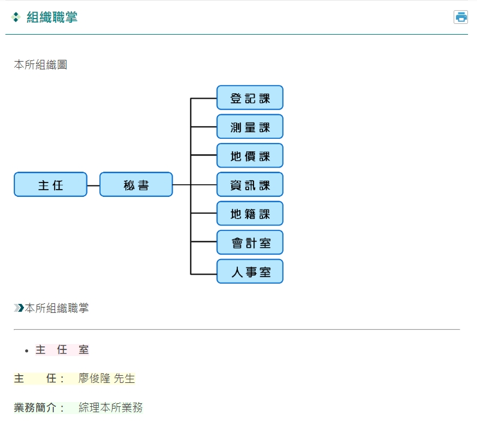
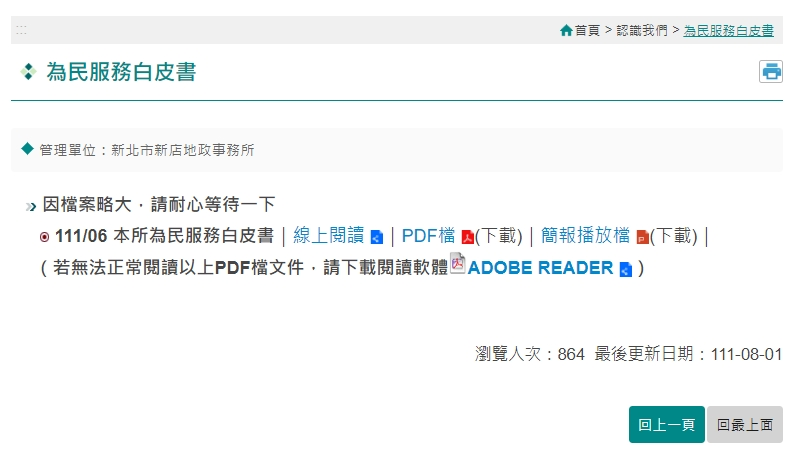
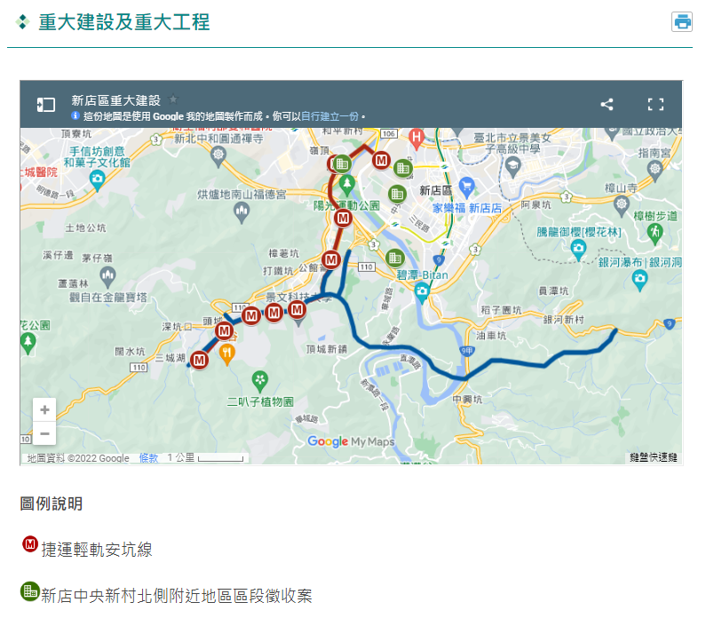
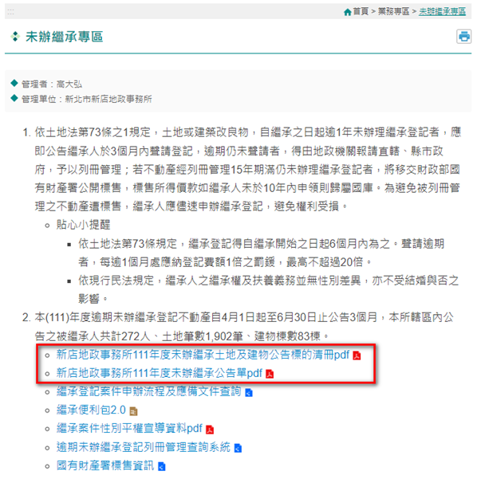
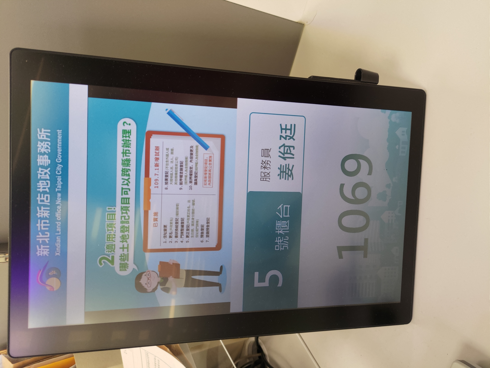
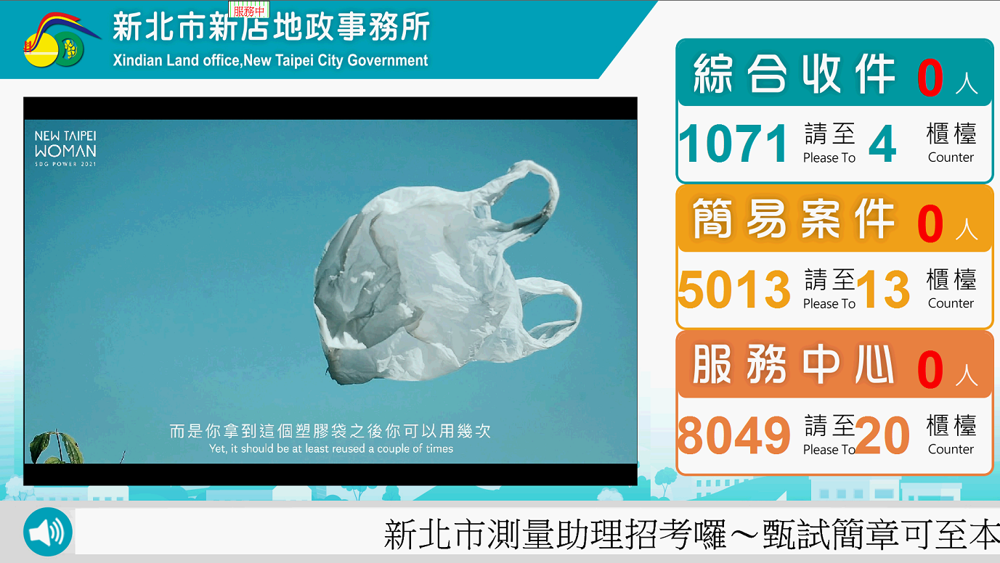
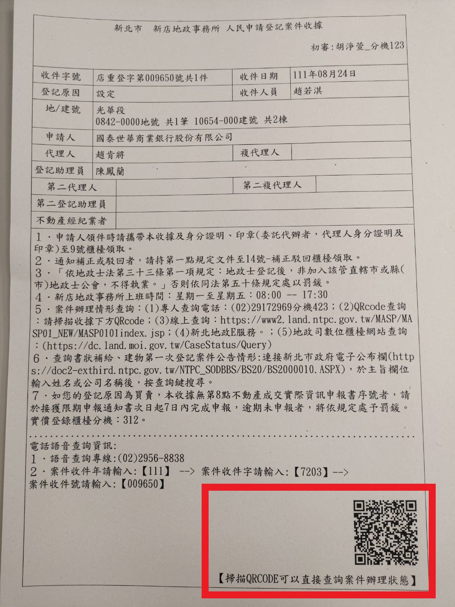
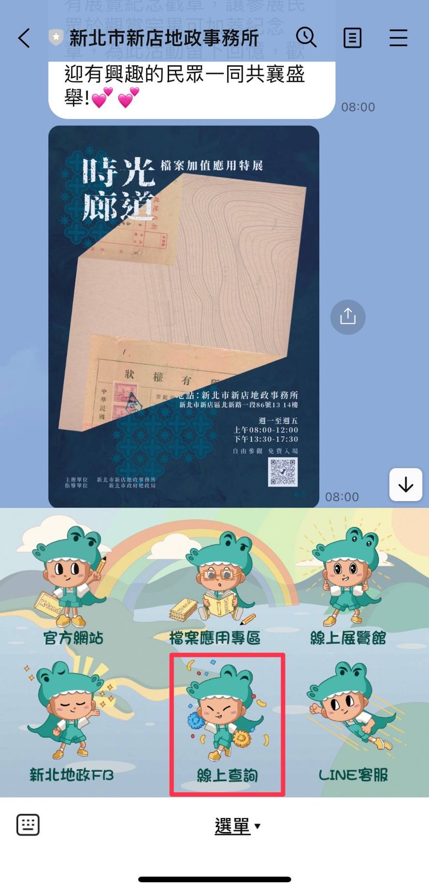
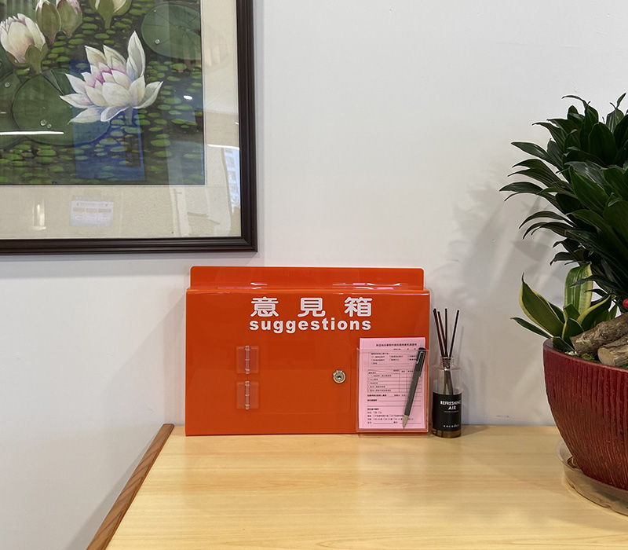
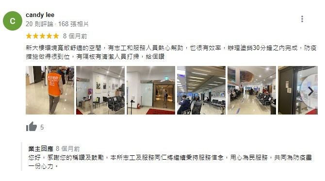

四、服務資訊透明度
(一) 資料開放
-
推動開放文件格式ODF
配合行政院「推動ODF CNS15251為政府文件標準格式實施計畫」，本所網站供下載文件如為可編輯者，皆提供 ODF 文書格式；非可編輯者，皆採用 PDF 文書格式。

-
政府資訊公開導覽
為維護民眾公開透明獲得政府資訊之權利，除依據政府資訊公開法規定應主動公開之政府資訊項目外，另提供「國家賠償事件處理情形統計表」及「保有及管理個人資料之項目彙整表」、「會計月報」等 3 項資訊，方便民眾瀏覽。主動公開政府資訊項目 說明 一、條約、對外關係文書、法律、緊急命令、中央法規標準法所定之命令、法規命令及地方自治法規 依據現行政府機關規定，條約、法律與中央法規等，皆由政府公報制度與法務部全國法規資料庫彙整。

二、政府機關為協助下級機關或屬官統一解釋法令、認定事實、及行使裁量權，而訂頒之解釋性規定及裁量基準 依據行政程序法規定，裁量基準與函釋應於公報發佈。

三、政府機關之組織、執掌、地址、電話、傳真、網址及電子郵件信箱帳號 均於本所網站公布。
四、行政指導有關文書 均於本所網站公布。

五、施政計畫、業務統計及研究報告 公佈本所業務統計、研究報告與出版品
六、預算與決算書 均於本所網站公布。

七、會計月報 均於本所網站公布。

八、請願之處理結果及訴願之決定 均於本所網站公布。

九、書面之公共工程及採購契約 書面契約存於本所總務室
十、支付或接受之補助 本所目前尚無支付與接受補助
十一、合議制機關之會議紀錄 本所非合議制機關，故無該類資訊
十二、國家賠償事件處理情形統計表 均於本所網站公布。

十三、保有及管理個人資料彙整表 公佈本所內部保有及管理個人資料之項目

-
新店房市一點通
針對新店區捷運站周邊 500 公尺、新和及安德安民生活圈提供實價登錄資訊分析、行情分布圖、行情走勢圖等資訊。
-
重大建設及重大工程
主動向民眾揭露工程項目、開發簡介及辦理進度。 -
未辦繼承專區
介紹未辦繼承相關法規、提供查詢系統連結，並定期更新本所未辦繼承標的清冊，提醒民眾盡速申辦繼承登記。 -
主動於現場標示，透過櫃檯、服務中心張貼資訊、櫃台雙向螢幕、大廳輪播機、直式及橫式取號機電視共計 6 種方式公開服務相關資訊。

【櫃台張貼資訊】 
【服務中心張貼資訊】 【櫃台雙向螢幕】 【取號機電視(直式)】 
【大廳輪播機】 【取號機電視(橫式)】 四、服務資訊透明度
(二) 案件查詢管道
本所提供觸控查詢系統、QR-CODE、電話語音查詢等 10 種案件查詢管道，提供民眾查詢案件辦理情形。
查詢管道 說明 觸控查詢系統 本所民眾查詢區放置觸控式查詢系統，提供「登記案件狀態查詢」、「測量案件狀態查詢」等 9 項功能。

QR-CODE 查詢 以行動裝置掃描登記案件收據或複丈定期通知書上之 QR-CODE ，立即顯示目前案件辦理情形。
電話語音查詢 為免除人工服務查詢案件等候，提供「新北市跨所語音查詢系統」，由系統語音自動回覆案件辦理情形。 專人電話查詢 提供「02-29172969分機423」電話專線查詢，可於本所服務時間來電詢問目前案件辦理情形，由專人協助查詢並回覆。 領件櫃台查詢 民眾可親至本所 9 號領件櫃檯洽詢。

網站線上查詢 本所網站提供「新北市案件辦理情形查詢」、「全國地政案件辦理情形查詢」等連結，民眾可線上查詢案件辦理情形。

簡訊、電子郵件自動通知 由系統針對各類案件自動發送簡訊、電子郵件通知，諸如登記案件結案通知、複丈案件外業作業通知。

單一窗口流程顯示系統 於本所大廳電視動態顯示當日簡易案件目前辦理情形。

地政資訊平台查詢 於民眾書寫區建置「地政資訊平台」，提供案件辦理情形查詢。

LINE 本所 LINE 官方帳號提供案件辦理情形查詢連結，民眾點選後可連結至本所網站的案件查詢專區。
四、服務資訊透明度
(三) 主動回應程度
-
LINE 即時通訊軟體
(1)24小時自動回覆：只要民眾加入本所 LINE 官方帳號，即可享受 24 小時自動回覆服務，隨時都可進行地政業務諮詢。
(2)專人回覆：若個案情況較複雜，也可切換成專人回覆。
(3)訊息推播：本所隨時會將最新地政消息、活動，透過 LINE 官方帳號推播給民眾。
本次考核區間累計自動回覆 342 次，由專人回覆 156 位民眾；累計推播 43 則訊息，共 4663 人收到訊息。 -
意見箱
於服務中心放置意見箱，民眾如對本所有任何想法與建議，皆可填寫「親民服務意見調查表」表達，本所收到後會盡速回覆民眾。本次考核區間累計收到 61 張調查表，皆為滿意。 -
GOOGLE 評論
若民眾至本所辦理地政業務有任何建議與感想，皆可於 GOOGLE 留下評論，本所收到後會進行回覆並檢討改進。本次考核區間累計收到 14 則評論，其中 10 則為正面評價、 4 則針對本所網路訊號、送件流程動線等提出意見。
-
LINE 即時通訊軟體